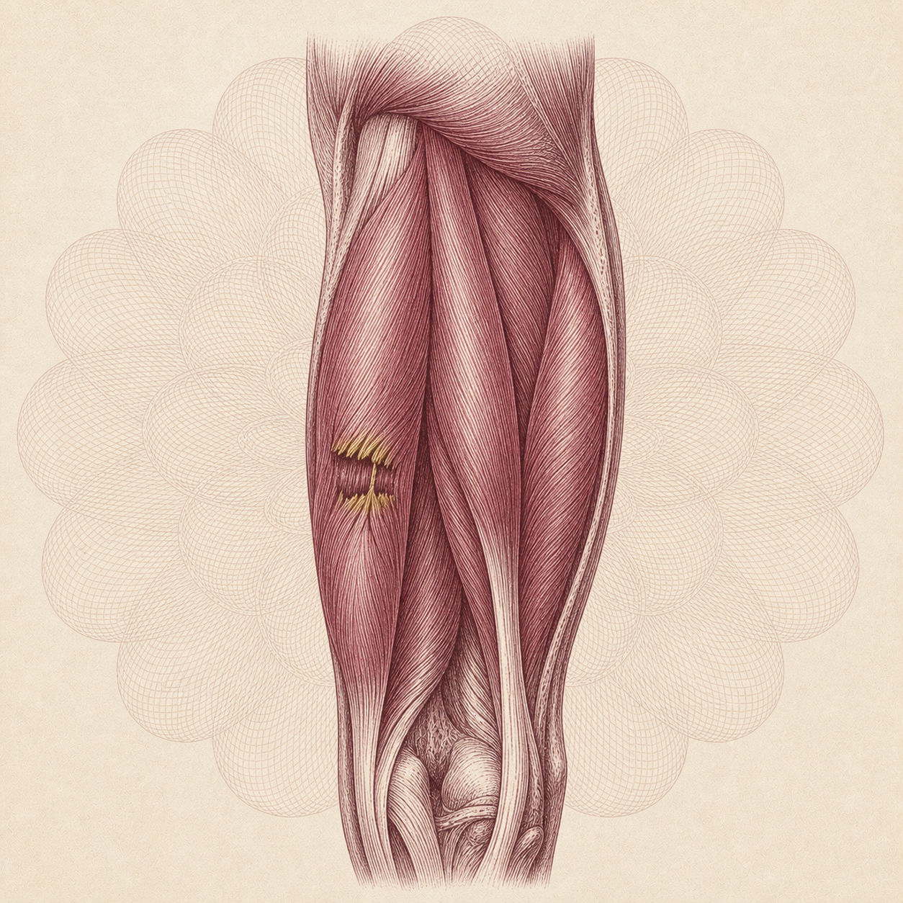
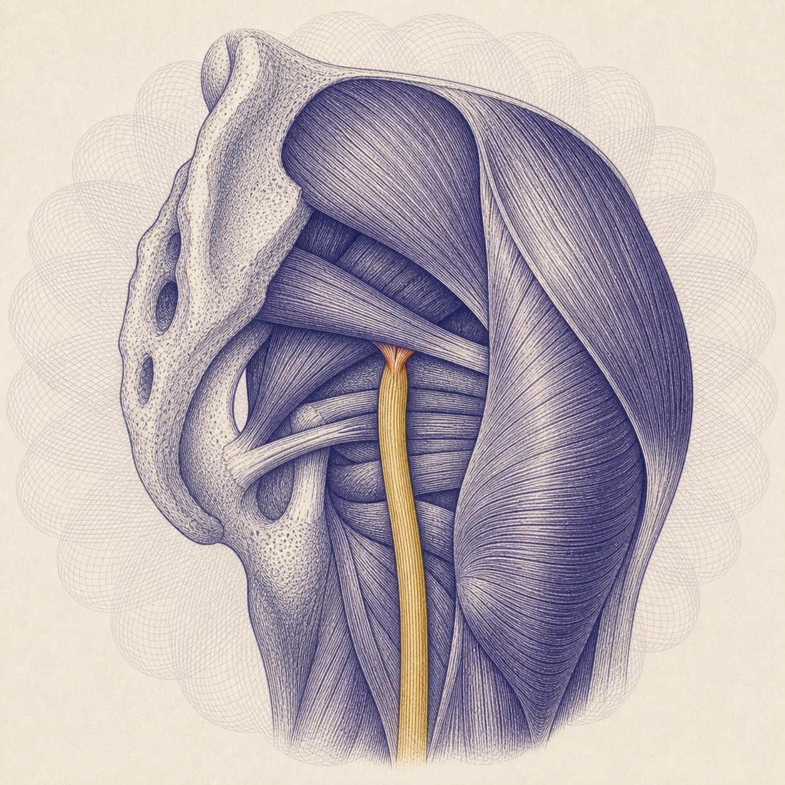
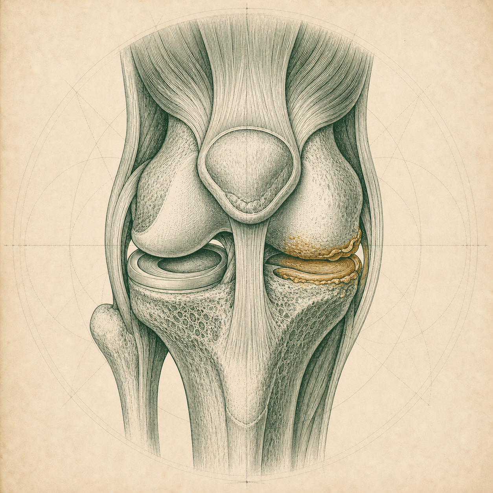
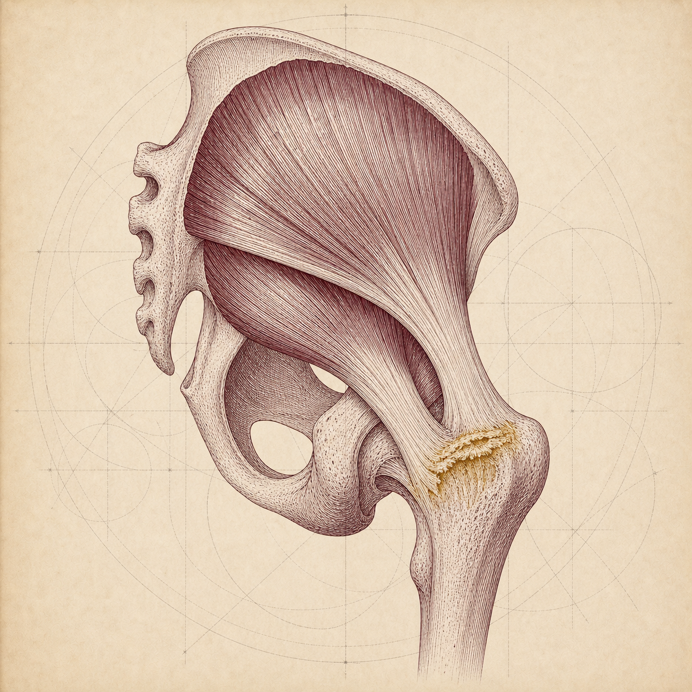
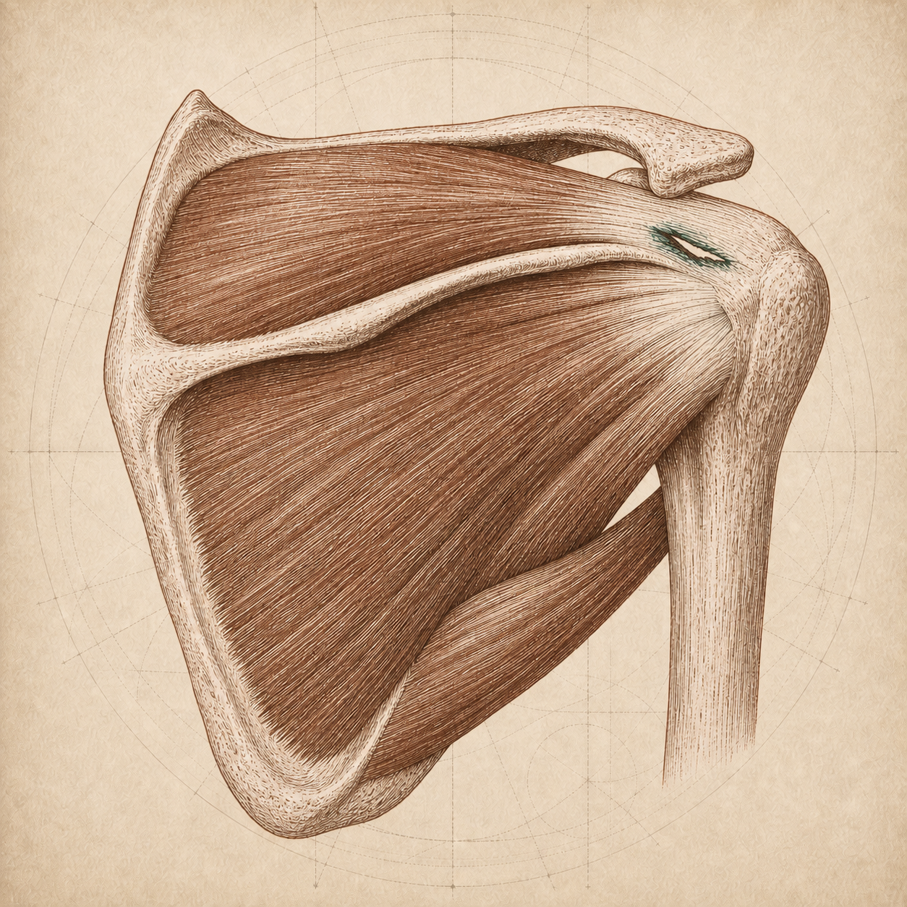
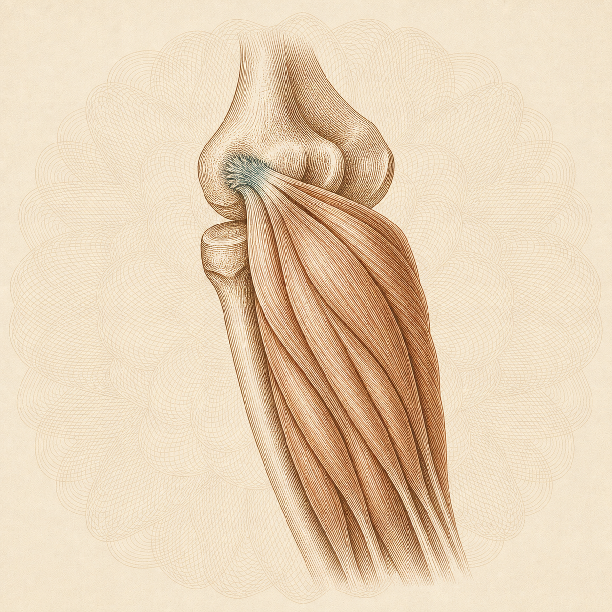
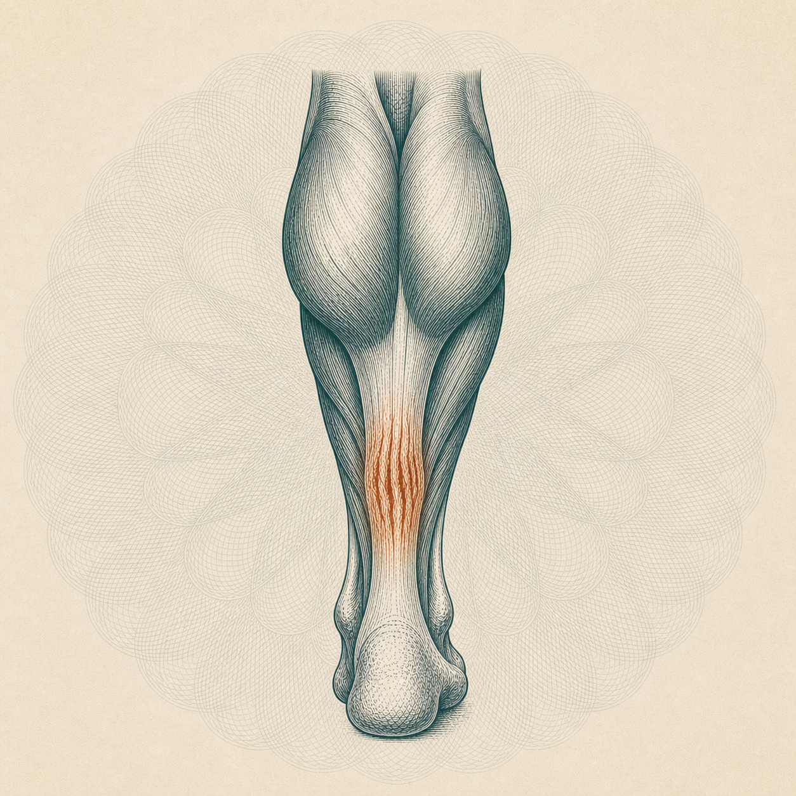
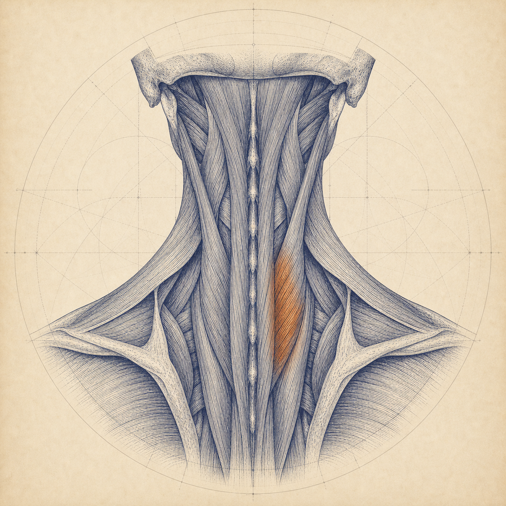

Not one uniform system. The engraving stays constant so all 56 read as one commissioned library; the tissue, composition and ink change so no two regions look alike.
How it works
Constant: fine intaglio engraving. Lines that swell and taper to describe volume, section hatching, and either patent construction geometry or guilloche rosette work behind the subject.
Variable: region ink, tissue, and composition. Pathology is picked out in a complementary accent inside each plate, localised to the abnormal tissue rather than used as decoration.
Treatment fit, per Codex: Patent suits layered mechanical relationships (overlapping muscle planes, a tendon under an arch, insertion footprints, cartilage surfaces). Guilloche suits long fibre architecture and continuous tissue paths (hamstring fibres, the extensor mass, calf into Achilles, the descending sciatic nerve).
Spine indigo
Shoulder russet copper
Knee forest
Hip burgundy
Foot teal
Elbow amber

Hamstring strainGuilloche · burgundyHip & pelvisMuscle-first: the posterior thigh group with fibre direction drawn throughout and a partial tear in the belly, torn fibres retracted in brass. Codex's strongest plate, and the clearest answer to the missing-muscle problem.

SciaticaGuilloche · indigo-violetSpineThe sciatic nerve descending through the deep gluteal region, musculature engraved around it, compression picked out where it exits. Richest colour and depth in the set.

Knee osteoarthritisPatent · forest greenKneeJoint space narrowing and cartilage loss at the medial compartment with quadriceps and patellar tendon present. Most immediately legible pathology at 264px.

Gluteal tendinopathyPatent · burgundyHip & pelvisGluteus medius and minimus bellies converging on the greater trochanter, degeneration at the insertion.

Rotator cuff tearPatent · russet copperShoulderThe cuff from behind with supraspinatus and infraspinatus bellies properly drawn, tendon passing under the acromion, tear at the insertion.

Tennis elbowGuilloche · burnt amberElbow, wrist & handThe extensor mass and its shared tendon at the lateral epicondyle, degeneration at the origin, petrol blue accent.

Achilles tendinopathyGuilloche · dark tealFoot & ankleGastrocnemius and soleus converging into the Achilles with mid-portion thickening in copper.

Neck painPatent · deep indigoSpinePosterior cervical musculature as a sleeve around the column. Codex flags this as the weakest: 'neck pain' is non-specific, so the accent shows restrained muscular overload rather than a diagnostic claim.